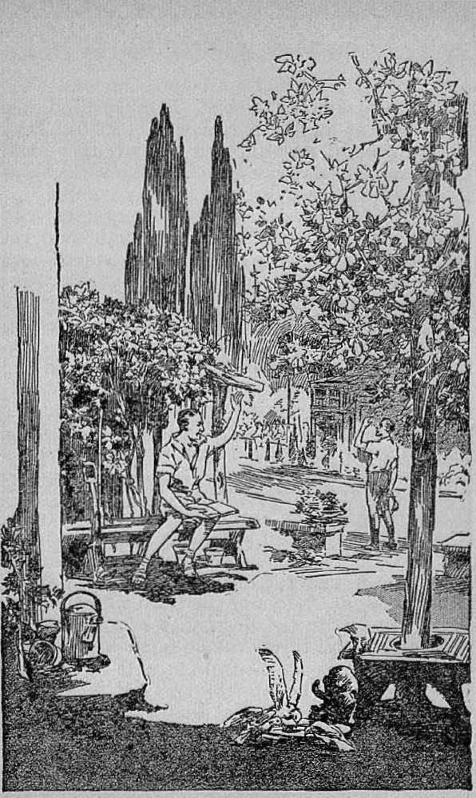
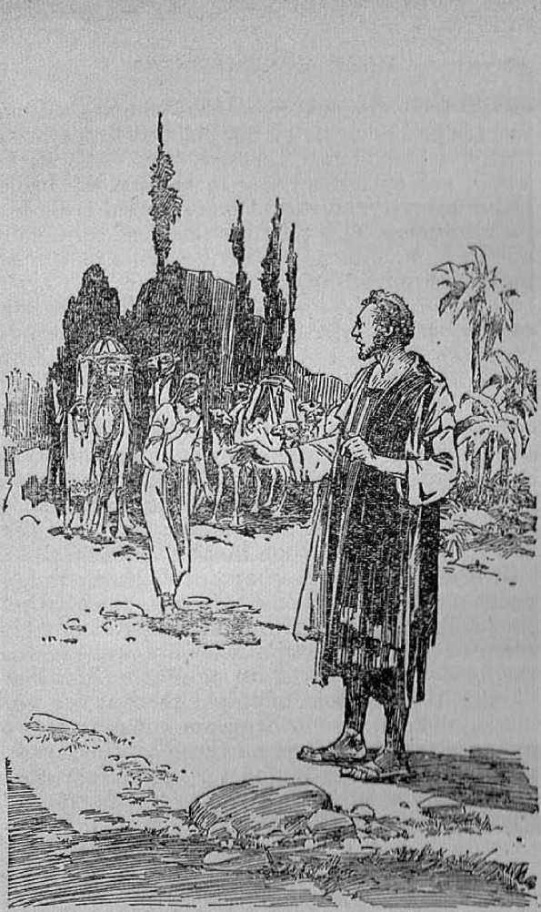

explained in
Seven Bible Treatises by J. F. RUTHERFORD
.}-------------------------------.--(.
Page
3 Reconstruction
11 Peace and Prosperity for the People
20 The Earth Made Glorious
28 Jehovah's Glory
36 Marriage
45 The Feast
53 Understanding the
Bible
■1---(•
Not only do we say, but we stand ready to prove to any honest thinking person, that Judge Rutherford’s explanation of the Bible, set forth in his books, answers logically and without equivocation every question of life and the hereafter that anybody has ever asked or can ask.
•>--<■
COPYRIGHTED 1932 and Published by W A T C H T OWES BIBLE AND TRACT SOCIETY International Bible Students Association Brooklyn, N. Y., U.S.A.
Branch Offices:
London, Magdeburg, Paris, Toronto, Strathfield, Cape Town, Berne, Copenhagen, Stockholm, and other cities. _
Made in U, S. A.
■ a
THAT the world needs reconstruction every reasonable person will admit. That no organization of men nor nation has brought forth an adequate or satisfactory scheme of reconstruction everybody must admit. What, then, is there upon which the people may base a hope to remedy the unhappy condition now existing? The true answer is, God’s kingdom is the remedy. It is the only certain, complete and adequate remedy, and there is none other. God through Christ will restore all things to a condition of peace, prosperity, health and life everlasting. A knowledge of such remedy is therefore of greatest public interest, convenience and necessity. •
Jehovah makes good every one of his promises. His creatures can rely upon him with the fullest assurance. When the traitor Satan started the human race on the broad way of destruction God gave, his word of promise that in his own due time he would bring forth a government that would destroy Satan and his power, and that by and through such righteous government all the families of the earth shall be blessed. Just as certain as the earth exists, just that certain God’s promise will be wholly fulfilled. In the hour of perplexity and distress the people will eagerly seek for a knowledge of 3
God's means of reconstruction. Only a brief reference thereto can be made here. The. Bible, together with the book Reconciliation, fully explains the same, and everyone should avail himself of the opportunity to gain the knowledge it contains.
The language of God's great promise is: “In thy seed shall all the nations of the earth be blessed.” Galatians 3:16 states that the promised seed is Christ, which means God’s anointed King. By and through Christ God will set up his kingdom and bring to the people that which they so much need and which will satisfy every honest desire.
The Bible contains many prophecies concerning the reconstruction of the world. It follows, then, that there must have been a time when man was in a happier condition than now. The Scriptural proof is that in Eden man was perfect and was given dominion over the things of the earth. Because he violated God’s law man lost his dominion and was expelled from Eden and caused to grow sick and die. After his being condemned Adam’s children were born and, the parents being then imperfect and sinners, their children inherited the same disability. In Romans 5:12 it is written that because of Adam’s sin all have been born sinners. For centuries the human race has continued to suffer oppression and sickness and death. Reconstruction, therefore, would mean to restore mankind to the condition of happiness, peace and life and make the earth a fit place in which to live. There must be a basis for such reconstruction. God could not pardon the sinner, because by so doing he would reverse his own judgment. He could provide that another perfect man might voluntarily take the sinner’s place in death. That is what God did, and concerning this it is stated, in John 3:16: “For God so loved the world, that he gave his only begotten Son, that whosoever believeth in him should not perish, but have everlasting life.”
There was no perfect man in existence who could possibly redeem his fellow man. To meet this emergency God sent his beloved Son from heaven, who became a man; and at his majority he was perfect physically and under the law. Then he voluntarily agreed to do God’s will. It was the will of God that Jesus should die in the place and stead of Adam, and this furnished the. basis for the release of mankind from death and its effects and opened the way for the reconciliation of man to God and for the reconstruction of the world. In 1 Peter 3:18 it is written that Jesus was put to death as a man and raised out of death as a spirit, and thus Jesus became the Redeemer of man and the rightful King of the world. In Philippians, chapter two, this statement is made: “’And being found in fashion as a man, he humbled himself, and became obedient unto death, even the death of the cross. Wherefore God also hath highly exalted him, and given him a name, which is above every name: that at the name of Jesus every knee should bow, of tilings in heaven, and things in earth, and things under the earth; and that every tongue should confess that Jesus Christ is Lord, to the glory of God the Father.”
The divine Jesus Christ is therefore clothed with full power and authority to save mankind to the uttermost and to fully restore all who believe. and obey him.
Fifty days after the resurrection of Jesus the apostles were assembled at Jerusalem. That was Pentecost. That day marked the time when his disciples began to understand and appreciate what restitution or reconstruction means. Moved by the spirit of God they told the people its meaning; and in Acts 3:20,21 the record is: ‘God will send Jesus Christ, who before was preached unto you; whom the heavens must retain until the time of restitution of all things, which God hath spoken by the mouth of all his holy prophets since the world began?
Jesus was then in heaven, and his activities would be confined to heaven until the time for his second coming and the beginning of restitution. After the apostles were dead, many errors were brought in which obscured the truth, and professed Christians went on in darkness and iu ignorance of many of the great fundamental truths. Among those errors taught by the clergy was that all the good go to heaven at death and all the. wicked go to eternal torment. The earth was entirely ignored. The facts now show, in harmony with prophecy, that about A.D. 1875 the Lord began to restore the truth to his followers. Then they learned that only a few ever go to heaven and that the hope .of the people in general is restoration to life and happiness on the earth. These great truths have been taught to the people by a few persons since that date, and the clergy generally have opposed them.
The second coming of the Lord, the end of the world, and the setting up of God’s kingdom, have been the greatest desire of true Christians. The year 1914 marks the end of the. world, the second coming of the Lord, and the beginning of his kingly power. All the facts and the Scriptures prove that the great battle of Armageddon will be fought in the near future and will result in completely ridding the earth of Satan’s wicked rule, and then quickly will follow the great reconstruction work, A knowledge of these facts brings joy to those who have a desire to see righteousness on the earth and peace amongst the people.
In 1 Timothy 2:3-6 it is stated that it is the will of God that all men shall be saved and then brought to an accurate knowledge of the truth by and through Christ and his kingdom. The sacrifice of Jesus provided salvation for all. But this salvation is a free gift from God, and no one can accept a gift without first having some knowledge of the offer. Hence it is essential that a knowledge of the truth must be brought to the people. God has commanded that those who are the true followers of Christ Jesus must be witnesses to give testimony to the people concerning salvation and reconstruction. In Isaiah 61:1-3 the commission of each of the true followers of Christ is set out and directs all such to preach the good news to the people, tell them of the day of God's judgment, bind up the broken-hearted, and comfort all that mourn. In obedience to these commandments of the Lord many books have been published in recent years setting forth in plain language these great truths now due to be understood. Among these books is one called Reconciliation. It sets out the Bible texts proving the philosophy of the sacrifice of Jesus Christ, the manner of selecting the church, the work to be performed by the church now; the resurrection of the dead, and the restoration of man, and the reconstruction of the world. Men and women devoted to God have been and are now diligent in putting these books in the hands of the people in order that the people may gain a knowledge of the truth. It is to be expected that Satan the Devil will use all possible means to prevent the people from gaining this precious knowledge; but since God’s time has come for them to know, nothing can prevent them from having an opportunity to know the truth.
In Acts 17: 31 it is written that God has appointed a day or a period of time in which he will judge the world in righteousness by Jesus Christ. There could be no judgment without a trial, and there could be no trial without knowledge on the part of those tried. It follows, then, that all who are dead will be brought out of the grave and given a knowledge of the truth and an opportunity to obey the truth and receive the blessings of the Lord. For this reason Jesus stated, in John 5: 28, 29, that all in their graves shall come forth, including the evil, and even these shall have a trial and judgment. The time in which that trial and judgment will be held is plainly stated, in 2 Timothy 4:1, in these words: “The Lord Jesus Christ . . . shall judge the [living] and the dead at his appearing and his kingdom.”
That means, then, that the setting up of the kingdom of Christ marks the beginning of the time of reconstruction or restitution. That will be a happy time for the people. For many centuries mankind has been blind to the truth, and this blindness has been due to the influence of the Devil exercised by and through hypocritical men called “clergymen”. In Isaiah 25:7 the Lord states that in the kingdom the veil of ignorance that is spread over the people’s eyes shall be taken away. God will give them the truth and will wipe away all tears from off all faces.
The sacrifice of the Lord Jesus Christ provided salvation for all, many of whom are yet on earth and many more of whom are dead. All of these will have an opportunity to come unto God’s organization (which is called “Zion”, and of which Jesus Christ is the Head) and, obeying, will receive the blessings of the Lord. Accordingly these words appear, in Isaiah 35:10: “And the. ransomed of the Lord shall return, and come to Zion with songs, and everlasting joy upon their heads; they shall obtain joy and gladness, and sorrow and sighing shall flee away.”
By his prophet Isaiah the Lord likens the way of reconstruction to a great highway. The way of returning to the Lord will be so plain that no one can be ignorant thereof. Nothing will be permitted to hinder the people from knowing the truth then, and all who diligently seek to do right, regardless of how imperfect they are, will then be cleaned up and fully restored. The language of that prophet is (Isaiah 35:8): “And an highway shall be there, and a way, and it shall be called The way of holiness; the unclean shall not pass over it; but it shall be for those: the wayfaring men, though fools, shall not err therein.”
The Bible declares that the time of reconstruction will cover a period of 1000 years, during which time all shall have an opportunity to know God and Christ, obey and live. Those who willfully refuse to obey will not be. tortured but will mercifully be destroyed. All those who do obey will be restored to perfection of manhood, and at the end of that period of time the earth will be inhabited by a perfect and joyful people. All that glorious work God will do by and through Christ Jesus; and concerning the work and its results Revelation 21:4, 5 states: “And God shall wipe away all tears from their eyes; and there shall be no more death, neither sorrow, nor crying, neither shall there be any more pain: for the former things are passed away. And he that sat upon the throne said, Behold, I make all things new. And he said unto me, Write: for these words are true and faithful.” The work of reconstruction will be in fulfilment of God’s Word of promise and will bring forth from all creation the everlasting praise, to his holy name.
JEHOVAH, the Creator of heaven and earth, is the God of peace. To his beloved Son he gave the name Prince of Peace. The earth is Jehovah’s, and the fullness thereof. God made the earth for man and made man for the earth and purposed that obedient man shall enjoy the fruits of his work upon the earth. Peace and prosperity are therefore the normal condition of man. All persons of good will desire a government of peace and prosperity.
The people find themselves today in a very bad condition. Prior to the World War conditions were bad enough, but they have since grown much worse. Crime and strife and poverty are ever on the increase, and all nations are preparing for war. A few extremely selfish men traffic in the fruits of other men’s labors and grow rich, while the masses slip deeper into the slough of poverty. The burdens of taxation, interest on the mortgages, and the cost of existence over increasing bear down upon the people. Fear and perplexity have laid a strong hand on the rulers, and their efforts toward war and self-preservation increase the burdens ami distress of the people. Well do these conditions . fit the words of Jesus in Luke, chapter twenty-one, who said: TJpon earth distress of nations, with perplexity, men’s hearts failing them for fear as they look to those things which are com-
ing upon the earth? Jesus declared that such conditions would exist on earth at the end of the world. The indisputable facts and Bible testimony both show that we are now at that time; therefore the people should take heed to the expressions given in the Bible as to the meaning of these present-day conditions and what the future holds for man.
There is a reason for this unhappy state of the people, and there is a complete and lasting remedy therefor. Man in his original state was perfect, healthy and happy, and at peace with all. Because of his willful violation of God’s law man lost his right to life and all the blessings that result to one with perfect life. The rebellion of Satan the Devil, man’s overlord, led the perfect man into sin, and suffering and death resulted. Satan planted strife and murder in the minds of men, and for many centuries the earth has been drenched with the blood of men unrighteously shed. Satan has used selfish men to build a gigantic organization by which the people have been woefully oppressed. Satan has fomented wars between the peoples and has taken peace from the earth.
Jehovah set a time limit in which he would not interfere with Satan’s rule or with man’s pursuing a selfish and wicked course. That period of noninterference God declared should end with the coming of Christ and his kingdom. That time has now come, and Christ has taken his power and begun his 1dmgly reign, and the great climax in the affairs of the world is reached. Satan is the invisible ruler or god of this world, and all nations of the earth are subjected to him. Any attempt therefore on the part of man or earthly organizations to establish a lasting peace must fail. The commercial and political powers of the world are promising lasting peace, and the clergy are loud in their declarations that in these powers lie peace and safety and that the League of Nations will give full assurance thereof. God in his Word says, in 1 Thessalonians 5:3: ""For when they shall say, Peace and safety; then sudden destruction cometh upon them, as travail upon a woman with child; and they shall not escape.” Let the people determine whether they wish to hear selfish men or to believe the words of the Lord.
Peace will come to the peoples of earth only by and through the kingdom of God under Christ. He will first destroy the wicked rule, that peace may result. Therefore says God by the psalmist, in Psalm two: "Christ shall break the nations with a rod of iron and dash them to pieces like a potter’s vessel.’
With wickedness cleared out by the great battle of Armageddon, lasting peace will then be upon the people, because God has given his Word that Christ shall rule and that.his government shall for ever give peace to man. By his prophet, at Isaiah, chapter nine, God says concerning Christ and his kingdom: "The government shall be upon his shoulder; he shall be a wonderful counselor of the people, and shall be called The Everlasting Father and Prince of Peace; and of the increase of his government and peace there shall be no end.’
Why should the people give further heed to the maudlin speech of arrogant men drunken with the power of this world and blinded by Satan, the common enemy, as to how peace shall come to them? The time has come for the people to know and to give heed to the word of the eternal God. When Jesus the babe was in the manger at Bethlehem God caused his angels to deliver this prophetic promise to man, namely: “Glory to God in the highest, and on earth peace, good will toward men? That promise of everlasting peace is certain to be fulfilled, and it can be. fulfilled only by and through Christ’s kingdom.
By his prophet (Zechariah 9:10) Jehovah says, concerning Christ Jesus the King, that he shall destroy the equipment of war used by the nations and then he shall speak peace to the people, and his dominion shall be from sea to sea, even to the ends of the earth. Then, and not until then, will the people really realize, that only the kingdom of God can bring their heart’s sincere, desire. God makes these promises to the people through his prophet Micah (4:3,4) concerning the end of strife and the reign of peace and prosperity:
"And he shall judge among many people, and rebuke, strong nations afar off; and they shall beat their swords into plowshares, and their spears into pruninghooks: nation shall not lift up a sword against nation, neither shall they learn war any more. But they shall sit every man under his vine and under his fig tree; and
PEACE AND PROSPERITY FOR THE PEOPLE 15 none, shall make them afraid: for the month of the Lord of hosts hath spoken it.”
Lasting peace and prosperity of the people are certain to go hand in hand and to be enjoyed by the people, because God lias promised it shall be. done. But the people must have some knowledge of God’s purpose in tliis regard in order to be in position to receive and enjoy the blessings he holds in store for them. It is the will of God, so expressed in the Bible, that there shall at this very time be conducted amongst the nations an active campaign of education, that the people may have an opportunity to learn the truth. Therefore, in obedience to God's will men and women come to your doors -with the message of truth in book form which enables you to learn with the least possible effort .what is about to come to pass. They are agents of no organization. They are the humble witnesses of Jehovah. By gaining a knowledge as contained in this message brought to you, great burdens of fear and distress shall be lifted from those who hear, and they will be duly equipped to meet the trying conditions of the day. The message brought to you by the men and women who call at your doors is not propaganda, as the enemy would have you believe. Such is merely an effort to aid you to obtain the information that you so much need in this time of stress. For your good, therefore, I bid you to open your ears to these witnesses and hear a brief statement of God’s purposes concerning the peoples of the earth.
Christ will rule with unlimited power, and all the power used will be for the general welfare of the people. His government will carry on a great reconstruction work which will restore the waste lands and make the desert blossom as the rose. The people will be secure in their liberty and in their property and will receive encouragement to do that which is right. The ruler of the people brings honor to himself when his efforts are all directed to the general welfare. God states this rule, in Proverbs, chapter fourteen, in these words: Tn the prosperity of the people is the king’s honor, but in the want of the people is the destruction of the ruler? [And again, in Proverbs, chapter twenty-nine: “When the righteous are in authority, the people rejoice; but when the wicked beareth rule, the people mourn.”
Concerning God’s government under Christ it is written in Isaiah’s prophecy: 'The King shall rule in righteousness, and with righteousness shall he judge the poor.’ This is a guarantee that even the poorest shall have a fair opportunity. Under the. unrighteous governments of today a poor man has a small chance. He uses all his savings to make the first payment on the building of a home -where he hopes to dwell with his family in peace and contentment. He is compelled to give a mortgage on his home and to pay a high rate of interest as well as exorbitant taxes. In distressing times that follow the mortgage holder takes the man’s modest home away from him, and he and his family are left out in the cold and suffer for want of food
Every man under his vine and fig tree Page 14
and shelter. Such will not be possible under the righteous reign of Christ, because God has promised, as stated in Isaiah 65: 22, 23: “They shall not build, and another inhabit; they shall not plant and another eat; . . . they shall not labour in vain, nor bring forth for trouble.”
The United States possesses the greatest material wealth of any country on earth; and yet there are millions without employment and children are hungry, and there is much suffering. It must be apparent, then, that there is something radically wrong. The entire method of government is wrong, because men are imperfect and Satan has misled and caused the people to suffer oppression. Under the righteous reign of Christ the visible representatives of his government on earth will direct the. people in the way of prosperity and plenty, and no one shall go hungry for food. Jehovah made promise, in Isaiah 25: 6, that in that government the Lord will make unto all the people a feast. Then the people will put away selfishness and learn to honor God; and what will be the result? In Proverbs, chapter three, the. answer is given in these words: “Honour the Lord with thy substance, and with the firstfruits of all thine increase : so shall thy barns be filled with plenty, and thy presses shall burst out with new wine.”
It must now be. apparent to all who think soberly and honestly, that the present unhappy conditions can never be remedied by man. Centuries of experience prove that with man such is impossible. When we gain a knowledge of the reason for these distressing conditions and what PEACE AND PROSPERITY FOR THE PEOPLE 19 is God’s remedy, then it is easy to be seen that the only way to have lasting peace and continuous prosperity is by and through the kingdom of God under Christ. Never in the history of man was it so important that the people learn the truth as now, and for that reason God has graciously arranged for a campaign of education to be carried on amongst the people. Let the people now learn the truth as set forth in God’s Word and they will be immediately relieved of great mental burdens. God’s mercy and loving-kindness will be fully bestowed upon the. people under the reign of Christ, and they will be blessed with everlasting peace and an abundance of prosperity. Concerning that kingdom, as it is written in the eighty-fifth Psalm,' the people are represented as then saying: "Mercy and truth are met together; righteousness and peace have kissed each other. Truth shall spring out of the. earth; and righteousness shall look down from heaven. Yea, the Lord shall give that which is good; and our land shall yield her increase. Righteousness shall go before him, and shall set us in the way of his steps.” Knowing these good things are certain to come from Jehovah’s kingdom, his witnesses are heard to say in the language of Psalm ninety-six: "0 worship the Lord in the beauty of holiness; fear before, him, all the earth. Say among the [nations], that the Lord reigneth; the world also shall be established that it shall not he moved; he shall judge the people righteously.”
MANY centuries before God made man lie created the earth. In proof that God would some day have the entire earth used to his glory, at the time of the laying of the foundation thereof he assembled his heavenly creation and informed them of his purpose. Moved by the glorious prospect the two ^morning stars'’, the Logos and Lucifer, sang a duet to the glory of God, and all the angelic host shouted for joy. Centuries thereafter Jehovah caused Job to make a record of these facts for the benefit of man. In the course of time God created man upon the earth and then caused his proj)het Isaiah to write: ‘I have made the earth and created man upon it; I have formed it to be inhabited.’
God made only Eden perfect and placed perfect man therein. In proof that no other part of the earth was finished then, God said to Adam when he expelled him from Eden: ‘The earth is unfinished for your sake.’ Imperfect man has found employment and work for his own good in his attempt to cultivate and beautify the earth. Some parts of the earth, by the grace of God, have been beautified, but most of it is yet barren and unfruitful. It has pleased God to develop the earth by a gradual process.
Since Jesus was resurrected and ascended into heaven, the great event to which Christians have looked forward has been his second coming and his kingdom. In recent years, in 20
THE EARTH MADE GLORIOUS 21 fulfilment of God’s prophecy, men who are boastful, loving themselves, and who are blasphemers of God’s name, have appeared prominently as teachers of the Bible. Some of these, claiming to represent God and Christ on the. earth, now boastfully state that man will do what God alone has promised to do and can do. One of these boastful men, whose voice is heralded throughout the land, in a recent speech said: 'We are not yet ready for the second coming of Christ. This earth is quite a juvenile planet and must be prepared for his second coming. Let us robe the earth with God’s glory in the moral achievements of men, then Christ can come.’ To the Lord such boastful words must sound like the empty noise of a broken cymbal. Even to an ordinary man who thinks soberly those boastful words are without rhyme or reason. The moral achievements of man during the past 6000 years amount to little or nothing. It is doubtful if the moral condition of the world was ever at a lower ebb than it is just now. In many respects there has been a retrograde rather than a forward movement in the past few years. Brave men with honest hearts have tried to build good governments, and today only the ruins thereof bear testimony to their feeble efforts and their faded glory. Many religious organizations have come to the fore claiming that they would reform and make moral the nations of the earth. They have completely failed. Today America stands at the head of the nations of earth in many material achievements, and yet her latest president truthfully said:
“Life and property are relatively more unsafe in the. United States than in any other civilized country of the world.” During the past twenty years the official records show that crime has increased in the United States fully three hundred and fifty percent. The inability to legislate morals into the people has been fully demonstrated by the abortive attempt made to enforce prohibition. Gangsters, racketeers, robbers and murderers overrun the land, and the moral degeneracy of the youth probably was never so low as it is just now. These things are potent witnesses to the fact that man’s claim to robe the earth in the moral achievements of men is not only boastful, but worse than useless. He who honestly and sincerely desires to see the earth a place of glory and beauty, where morality and righteousness will reign, must now cease to give heed to the boastful words of men and turn his attention to the infallible Word of God. The power of Jehovah God is not limited, and his purpose he will accomplish to his own honor and glory.
By the mouth of his prophet Isaiah (chapter sixty-six) Jehovah says: “The heaven is my throne, and the earth is my footstool.” (Chapter 60:13) “And I will make the place of my feet glorious.” The garden of Eden was perfect and glorious, because, the divine record is, ‘in that garden grew everything that was pleasant to the sight and good for food.’ Had the first man proven his complete loyalty and obedience to God, without a doubt God would have shown him how to make the earth beautiful and glorious, because it is written, in Genesis, that Goel said to man: “Be fruitful, and multiply, and [fill] the earth, and subdue it.” This authority implies that God would have supplied man with a proper knowledge and means to accomplish that very thing. Had man followed that course and his offspring remained in harmony with God, in the course of time the earth would have been finished and robed in the glory and beauty of God, and perfect man would have had something to do therewith.
Man lost all these privileges and blessings by reason of his own wrongdoing. All of his children have by inheritance been born in sin and shapen in iniquity, and all are therefore imperfect. God has never commissioned man to make the earth a glorious place, and will not do so. Having expressed his purpose to make the earth a place of glory, God will do it, and this he will accomplish by his chosen instrument Christ Jesus. In 1 Corinthians, chapter fifteen, with clearness the statement is made that the second Adam, Christ Jesus, is the one that Je-•hovah has clothed with all power and authority, both in heaven and earth, to carry out his purposes. Jehovah God has made his beloved Son "heir of all things”, which includes the earth. He has made him the Executive Officer to carry into operation his will, and that includes making the earth a glorious place.
Approximately 1900 years ago Christ Jesus by his own shed blood provided redemption for man. Now he comes the second time in his glory and power, to deliver and restore man and to make man a glorious home on earth. It is a rule without exception that, when it is desired to erect a new and beautiful structure, the lot of ground is first cleared of the old and decayed buildings. Before the Lord will robe the earth in beauty and the glory of God, he will first destroy and completely remove the structure which Satan and his agents have erected and which now is unsightly and hideous to all who love righteousness. The great battle of Armageddon which is just ahead will clear the ground to make way for the erection of the beautiful and glorious structure to the good of man and to the honor of God.
Throughout all the earth there appear the unsightly tombs of the billions of dead, klan has done his best to make these places look pleasant; but the memories of death which these monuments arouse make the cemetery a place of sadness. For the comfort of man the sweet words of Jesus now ring out: 'Marvel not: the hour is coming in which all in their graves shall be awakened and come forth.’ These words of promise are certain to be fulfilled. This is the work that Jehovah will do by the hand of Christ Jesus, who said (Revelation 1:18): (T am he that liveth, and was dead; and, behold, I am alive for evermore, Amen; and have the keys of hell and of death.”
Clothed with power and authority to open the graves and lift the people out of death, Jesus now comes to resurrect and to restore the obedient ones and make them joyful of heart. Again, he says in Revelation, chapter twenty-one: "God shall wipe away all tears from their eyes; and there shall be no more death, nor sorrow, nor crying, nor any more pain; for the Lord makes all things new.’ The wild beasts of the fields have long been man’s deadly enemies and have preyed upon man because Satan the Devil made them thus to do. All the beasts of the field and the fowls of the air were originally under the supervision of Lucifer; and when he rebelled and became Satan, he turned them against man in order to reproach God. Under the reign of Christ, when reconstruction progresses, the promise of God is, he will make a covenant with the beasts of the field and the fowls of the air and will establish peace between them and man. Concerning this it is written, in Hosea 2:18: “In that day will I make a covenant for them with the beasts of the field, and with the fowls of heaven, and with the creeping things of the ground; and I will break the bow, and the sword, and the battle out of the earth, and will make them to lie down safely.” Then will exist the condition described by the prophet Isaiah (11: 6-9), wherein, it is stated, “the wolf also shall dwell with the. lamb, and the leopard shall lie down with the kid; and the calf, and the young lion, and the falling together; and a little child shall lead them. . . . Ard the sucking child shall play on the hole of the asp, and the weaned child shall put his hand on the cockatrice’ den. They shall not hurt nor destroy in all my holy [kingdom]; for the earth shall be full of the knowledge of the Lord, as the waters cover the sea.”
Now thorns and thistles encumber the earth, and the Devil sends an army of bugs and other pests to destroy men's crops; but such conditions will not exist during the reign of Christ, because, it is written, in Isaiah 55:13, “Instead of the thorn shall come up the fir tree, and instead of the brier shall come up the myrtle tree; and it shall be to the Lord for a name, for an everlasting sign that shall not be cut off.” Then the earth shall be free from the pests and will yield her increase, and the people will be glad.
Today there are millions of square miles covered with burning sands where no living thing exists. If these desert lands were watered they Would produce. God will see to it that they will be watered, because his promise, recorded in Isaiah, chapter thirty-five, is: ‘Tn the wilderness shall waters break out, and streams [of water] in the desert. The wilderness, and the solitary place, shall be glad for them; and the desert shall rejoice, and blossom as the rose. It shall blossom abundantly, and rejoice even with joy and singing; the glory of Lebanon shall be given unto it, the excellency of Carmel and Sharon; they shall see the glory of the Lord, and the excellency of our God.”
Today the people travel over the desert lands and remark: “How barren! and what a waste of land!” They will not always say that, because God through his prophet, in Ezekiel, chapter thirty-six, says: “And the desolate land shall be tilled, whereas it lay desolate in the sight of all that passed by. And they shall say, This land that was desolate is become like the garden of Eden; and the waste, and desolate, and ruined cities, are become fenced, and are inhabited.” The peoples of earth will then see God’s great handiwork and will rejoice. Appreciating the fact that they have been redeemed by the Lord and are being made well and given the blessings of life, it is written concerning them (Isaiah 35:10): “And the ransomed of the Lord shall return, and come to Zion with songs, and everlasting joy upon their heads; they shall obtain joy and gladness, and sorrow and sighing shall dee away.”
It is far better now that the people refuse to give further heed to the senseless and brasssounding words of boastful and egotistical men, and turn their minds and hearts to the Lord and Iris Word. To aid you in gaining just that knowledge, men and women devoted to God and to Christ are now coming to you with books concerning "Creation”, "Prophecy” and “Life” that fully explain all these points and show you where to find the truth in the Bible. Open your minds unto the Word of God and learn of him. God having promised that he will make the earth a place of glory and beauty, wherein restored man can live forever, he is sure to make good that promise. Jehovah by his beloved Son will cleanse the earth of all unrighteousness and make it a place of perfection and beauty for the good of man. Let the people learn these truths now and begin to take heed and to give honor and glory to the Almighty God.
' | ’HE RIGHT to all life proceeds from the ■j Almighty God. It is emphatically stated in the Scriptures that to receive life everlasting man must know God and Jesus Christ, whom he has sent. That all men may know these facts and profit thereby, it is written, in Habak-kuk 2:14: “For the earth shall be filled with the knowledge of the glory of [Jehovah], as the waters cover the sea.” That means that some day the knowledge of the peoples of earth concerning God and his glory shall be so full and complete in the earth that it is compared with the depths of the mighty ocean. Then every one. will have an opportunity to accept life on the terms offered. For more than sixty centuries the people have been kept in ignorance of God's goodness and his glory, and Satan has been the chief one who has hindered them from gaining such knowledge. Today when God begins to raise the tide of truth in the earth for the benefit of man, those who most bitterly oppose and seek to keep the people in ignorance thereof are the religious leaders in so-called “organised Christianity”. These fraudulently claim to represent God and preach his Word but, in fact, are the agents of God’s archenemy. But the day of hypocrisy must now end, because Jehovah has declared that his truth shall sweep away the refuge of lies, that the truth may be freely known. Those who today honestly and earnestly seek the truth and devote themselves to the
study of God’s Word are blessed with an advance vision of the glory of God and the blessings that shall soon come to the peoples of earth through the ministration of his loving-kindness.
Never before in the history of man have conditions been so favorable as now to study the Bible. By the words of his prophet and by bringing to pass in these days the events in fulfilment of prophecy Jehovah is making known his purposes concerning man. Therefore it is written: ‘Blessed is the man who reads and understands these things.* Jehovah is the unselfish one; hence concerning him it is written that God is love. As a man comes to a knowledge of the unselfishness of the Almighty God he begins to discern something of his glory. His exact justice, his complete wisdom, his unlimited power, and his boundless love bespeak his majesty and his glory. All these attributes he causes to work together for the good of his creatures who love and obey him.
When God brought forth his beloved Son out of death, he exalted him to the highest position in the universe, gave him a name, above every name, and commanded that all the hosts of heaven should worship and honor his beloved Son. Thus he exemplified his own unselfishness. The commandment extends to every creature on earth, and the day must come when every creature that shall be given life will bow the knee and worship Christ to the glory of the Almighty God. •'
Another title conferred upon Christ by the Most High is ‘My elect servant, in whom my soul delighteth’. The beloved Son is at all times faithful and true to the Almighty and energetic in carrying out the will of his Father. He is therefore truly the 'elect servant of God’ who brings delight to his Father’s heart at all times. Associated with Christ Jesus and as members of the "servant” class will be those who have faithfully followed in the footsteps of Christ Jesus, and these include the apostles and some others since their day. "The servant” will always be doing Jehovah’s will.
Because of his devotion to God and Christ, the faithful John was banished by Satan’s organization to the Isle of Patmos. While there. God gave the revelation of his purposes to Jesus Christ, who in turn caused John to write down that vision. It is certain that God’s purpose is that man shall some day have an understanding of the book of Revelation. That time has now come, and the meaning of Revelation is opened by the Lord to those who love him. This is another strong proof that we are now in the great change from the wicked rule of Satan and his agents to the righteous rule of Christ over the affairs of earth. God’s kingdom under Christ and the day of deliverance are at hand, all of which bespeak the glory of Jehovah,
It now clearly appears that John, who wrote down The Revelation, stood for and represented all the faithful followers of Christ at the end of the world, where we now are. The promise of God is that those who love him shall now have an understanding of that Revelation; and when
they understand it they must make it known to others, that they in turn might see and take their stand on the side of the Lord and to his glory. Those devoted to Jehovah now see that the greatest question at issue before creation is the vindication of God’s word and name. They appreciate the fact that the time is just at hand when God’s word and name shall be vindicated. Therefore the prophet represents them saying (Psalm 8:1,2): “0 Lord, our Lord, how excellent is thy name in all the earth! who hast set thy glory above the heavens. Out of the mouth of babes and sucklings hast thou ordained strength, because of thine enemies; that thou mightest still the enemy and the avenger.” These words compare. God’s faithful witnesses to babes, because all that they have the Lord committed unto their hands, and they must tell only what God commands them to tell, and all this is the truth, and the truth always bespeaks the glory of the Most High. The Bevelation which God gave to Jesus Christ is explained in two books entitled Light, which are brought to you for your inspection and information. Briefly, now, consideration is given to some of the things therein contained and which reflect the glory of the Most High.
In chapter twenty-one of Revelation, concerning the incoming kingdom, John wrote: “And I saw a new heaven and a new earth; for the. first heaven and the first earth were passed away, and there was no more sea.” The fulfilment of that prophetic vision follows the. battle of Armageddon soon to be fought. With the fire of that terrible trouble burned out and the wicked rule destroyed from the earth, then the glory of God’s kingdom under Christ begins to appear and in due time fully appears to all the earth, and then the earth shall be filled with the knowledge of the glory of the Almighty. The people then will give their unstinted praise to the name of Jehovah and his beloved Son.
Centuries ago God caused Isaiah his prophet to write: “Behold, I create new heavens, and a new earth; and the former shall not be remembered, nor come into mind.” This is the same heaven and earth mentioned by John, the writer of Revelation. The old “heaven” means the invisible wicked reign of Satan, and the old “earth” means the visible part of Satan’s organization. The “new heaven” means the righteous kingdom of God under the rule of Christ, and the “new earth” means the peoples of earth, organized into a righteous government, under the control of Christ, earth’s rightful King. This new heaven and new earth bespeak the majesty and glory of Jehovah, because they are his creation.
Then the text says: 'And there shall be no more sea.’ That does not mean that the oceans will be dried up. Revelation is written in symbolic language, and the “sea” represents the peoples of earth that are alienated from God and who are used by Satan for his wicked purposes. Out of that sea of Satan has come the beastly earthly rule that has oppressed the peoples of earth. The Lord has promised that these wild “beasts” shall be destroyed at Armageddon, meaning that all wicked and oppressive rule shall go down. Under the reign of Christ all the obedient ones will be restored, while all those who persist in wickedness will be destroyed. The not result will be the earth filled with a happy and obedient race, of people, and then there will be no more people alienated from God, represented symbolically by the “sea”. That restored and happy people will reflect the glory of the eternal Creator, and the people will have knowledge thereof.
Continuing his description of that glorious thing from God, the inspired writer of Revelation recorded these words: “And I John saw the holy city, new Jerusalem, coming down from God out of heaven, prepared as a bride adorned for her husband.” A “city” is a symbol of an organization. “The holy city” here is the heavenly organization which is wholly devoted to God and righteousness and is made up of Christ and his associates. Jerusalem is the only city on earth ever designated as a holy city, and that because God put his name there. That city of Jerusalem in Palestine was a type of the new Jerusalem, which means ‘the foundation of peace and secure habitation for men’. It is described as having twelve foundations, and hence it includes all who are wholly devoted to God and his kingdom. It is an organization from heaven, and therefore its founder and builder is God, as the Scriptures declare. In the language of the Prophet Daniel, it is “cut out” of the universal organization of Jehovah and comes down from heaven to rule the earth in righteousness.
There are millions of persons on earth who are of good will and bear the name Christian but who have no knowledge, of the goodness and glory of Jehovah God. There is a small number of people wholly devoted to God and who are designated in the Bible as his “remnant”, and to these is committed the duty and obligation of delivering to the people the testimony of Jesus Christ concerning his kingdom. This little company, called “the remnant”, see in God’s Word his expressed purposes, and the company is represented as hearing the voice or commandment out of heaven, concerning which it is written: “I heard a great voice out of heaven, saying, Behold, the tabernacle of God is with men, and he will dwell with them, . . . and be their God.” The “tabernacle” denotes the presence of God with those who are devoted to him and who are commanded to be his witnesses, and these must and will serve Jehovah to his glory and honor by being his faithful and true witnesses. Jehovah now shows to these the meaning of prophecies that are now in course of fulfilment, and says to them furthermore: “New things do I declare; before they spring forth I tell you of them.” This faithful little company is therefore commanded to tell these good things to the peoples of earth who will now hear; and this message is to the glory of J ehovah.
The Revelation describes the wonderful organization, which is the kingdom under Christ and which tells of the glory of God, and then explains that in this kingdom God will take away all sickness, suffering, sorrow and death and will wipe away all tears and will make all things new, beautiful and glorious for the good of man. The knowledge concerning God will continue to increase, and thus will his glory increase in the earth.
Then the Revelator, at the direction of the Lord, delivers a message to his faithful remnant class and directs them to carry this message to the people at the present time, in order that their burdens may be lifted and that the people might see now some of the glory of God and the blessings he will bestow upon humankind. Jehovah is the great Spirit, and Christ Jesus is his “express image”; therefore both are designated under the title “The Spirit”. The faithful members of Christ’s body are designated as “the bride”. The message God sent and caused John to write down in Revelation 22:17 is this : “And the Spirit and the bride say, Come. And let him that heareth say, Come. And let him that is athirst come; and whosoever will, let him take the water of life freely.” This is a gracious invitation to all who desire to learn the truth. Addressing those who are of his remnant, Jehovah says: 'Ye are my witnesses that I am God; go and deliver this message concerning my purposes to the people.’ In obedience to his commandment that faithful little company of men and women walk to your homes to make known to you the good news that the kingdom of God will bring to you. To be sure,
Satan has his clergymen oppose this work; and they do oppose it. That is to be expected; but let no one who loves righteousness be at all discouraged thereby. The truth must be told, because God has commanded it to be told; and therefore there is no power in opposition that can stop it. When the work is done, God will stop it; and it will not be stopped before. That work will reflect the glory of Jehovah God.
JEHOVAH GOD made provision for the marriage of man and woman. It is therefore a divine institution, and questions relating to marriage should be settled according to the rule of the Bible. Jehovah first made man and then declared: Tt is not good for man to be alone. I will make him a help-meet for him.’ He made a woman and brought her unto the man. In other words, God made the man and woman and brought them together that they might enter into the marital relationship.
The question is often asked, Who has authority to perform marriage ceremonies in order that marriage between man and woman may be right and proper? Many answer that a man and woman are not married unless a marriage ceremony is performed by a duly ordained priest or clergyman. Since the marital relationship is of divine institution, the question can be properly answered only as the Scriptures state. No organization would have the authority to make a rule contrary to that which is stated in the Bible, or even a rule that is not approved by the Word of God. The Bible contains not one word giving authority to a priest, clergyman or minister of religion to perform a marriage ceremony. The law of the land made by men does bestow authority upon a priest, clergyman or minister of religion to perforin marriage ceremonies. The question here is being considered purely from the Bible authority.
When God made man and woman and brought her to the man, there is nothing in the record indicating that a ceremony was performed. Manifestly it was impossible for any man to have performed such a ceremony at that time, for the reason that Adam was the only man on earth and Eve was the only woman. In the second chapter of John the record discloses that there was a marriage in Cana of Galilee and that Jesus and his disciples were invited and were present on that occasion. There is not one word in the record, however, that either Jesus or his disciples performed any marriage ceremony at that or at any other time. The only act of Jesus performed in connection with that wedding in Cana was that of making wine when it was needed, and which constitutes the beginning of his miracles. Manifestly Jesus was there performing that miracle to begin the work of establishing faith of the people in him as the Messiah. It had nothing to do with the contracting parties.
When Jehovah organized the Jews as a nation he made provision for the office of priest, and he appointed men to the priesthood to perform the duties of the priest office. The office and service of these priests or ministers was in connection with the sacrifices; but the Bible contains not one word showing that they had any authority or duty in the performance of marriage ceremonies. The practice amongst the Jews was that when a man sought a wife he had some friend to act for him, and the father or brother or other near relative acted for and in behalf of the woman. The "friend of the bridegroom” and the near relative of the woman arranged the terms of the contract. Sometimes the consent of the young woman was asked; but often she was selected and arrangements were made without first obtaining her consent, but her consent was afterwards obtained when she entered into the marital relationship.
Both the Bible and the law made by the various nations recognize marriage as a contract entered into and performed by the man and the woman. John, who announced the appearing of Jesus, said (John 3: 29): "He that hath the bride is the bridegroom; but the friend of the bridegroom, which standeth and heareth him, re-joiceth greatly because of the bridegroom’s voice; this my joy therefore is fulfilled.” The consummation of the marriage contract is therefore shown to be a time of rejoicing.
The marriage of Isaac and Rebecca, as recorded in the twenty-fourth chapter of Genesis, is a plain and clear statement of what constitutes marriage in the sight of God. Abraham was growing old and he desired that his son Isaac should take a wife. The native land of Abraham was Mesopotamia. Abraham coinmissioned his servant to go to his native land and there seek out and take a wife for Isaac. In proof that it was to be a contract between the woman selected and Isaac, the servant of Abraham inquired what he should do in the event that the woman was not willing, and to that question Abraham replied: Tf the woman will not be willing, thou shalt be cleared of thy oath or obligation.’ The meeting of the minds, or willingness on the part of both the contracting parties, is necessary to the contract.
Arriving in Mesopotamia, Abraham’s servant came in contact with the young woman Rebecca, the daughter of Abraham’s nephew; and she was therefore a kinswoman of Isaac. Without a doubt the Lord had directed Abraham’s servant to that house, because it is written, in Genesis 24:7: “The Lord God of heaven . . . shall send his angel before thee; and thou shalt take a wife unto my son from thence.” Abraham’s servant presented himself to the father and brother of Rebecca, and they discussed together the question of her becoming the wife of Isaac. Krom the record I quote these words which show that the consent of Rehe.cca was obtained before I be marriage was made (Gen. 24:58,61.-67): “And they called Rebekah, and said unto her, Wilt thou go with this man? And she said, I will go. And Rebekah arose, and her damsels, and they rode upon the camels, and followed the man;
and the servant took Rebekah, and went his way. And Isaac came from the way of the well Lahai-roi; for he dwelt in the south country. And Isaac went out to meditate in the field at the eventide; and he lifted up his eyes, and saw, and behold, the camels were coming. And Rebekah lifted up her eyes, and when she saw Isaac, she lighted off the camel. For she had said unto the servant, What man is this that walketh in the field to meet us? And the servant had said, It is my master; therefore she took a vail, and covered herself. And the servant told Isaac all things that he had done. And Isaac brought her into his mother Sarah’s tent, and took Rebekah, and she became his wife; and he loved her; and Isaac was comforted after Ms mother’s death?’ No clergyman was present at that marriage: only the two contracting parties ; and possibly the servant of Abraham was present as a witness.
In due time God inspired Paul to write that marriage is a beautiful picture of the selection of the bride of Christ. In that picture Abraham represented Jehovah God, while Isaac pictured Jesus the beloved Son of God, and Rebecca, who became the wife of Isaac, pictured the church, the bride of Christ. In 2 Corinthians 11: 2 Paul wrote to the church: “For I am jealous over you with godly jealousy; for I have espoused you to one husband, that I may present you as a chaste virgin to Christ.”
Abraham’s sending his servant to select the wife for his beloved son Isaac pictured God’s sending his holy spirit to earth to seek out and
Type of the marriage of Christ and the bride Page 40
choose from amongst men those who are willing to become the bride of his beloved Son Christ Jesus, whom Isaac foreshadowed. Abraham would not permit anyone to become the bride of his beloved son except one selected from his own kinsmen. This pictures that God selects no one to become members of the bride of Christ until such have first become his sons in Christ and therefore the kinsmen of Christ by reason of consecration, justification and spirit-begetting. Thon such are called to the high calling or membership in the bride of Christ. These are pictured by the prophet of God as young virgins. In Psalm forty-five it is written concerning such: “Hearken, O daughter, and consider, and incline thine ear; forget also thine own people, and thy father’s house; so shall the King greatly desire thy beauty; for he is thy Lord; and worship thou him.”
In the twenty-fifth chapter of Matthew appears a parable spoken by Jesus, showing that the bride joins herself to the Bridegroom and is pictured by wise virgins who are waiting for the bridegroom Christ to appear. (Matthew 25: 6, 7,10) “And at midnight there was a cry made, Behold, the bridegroom cometh; go ye out to meet him. Then all those virgins arose, and trimmed their lamps. . . . And they that were ready went in with him to the marriage.” The marriage of Christ to the church is therefore the result of a covenant or contract fully and completely entered into and faithfully performed. There is no intervention of a third party, such as a priest or clergyman. There
is even no third party to the contract of the -covenant between a man and woman before in:-,r riage. Each undertakes the solemn obligation, and each one should faithfully carry out Ilie contract. As the marriage feast followed ini mediately after the consummation of the <.....
tract, even so immediately following the marriage of Christ and the church is a l ime of feasting and rejoicing.
A marriage ceremony at which a priest or a clergyman officiates is entirely a human institution. It is a religious rule, but not a rule of Ilie Bible. The Jews practice one kind of ceremony, the Catholic another, and the Protestants still another. They could not all be of G-od, and, in fact, none of them are of God.
"Why then have the people followed the rule of having a marriage ceremony performed by a clergyman? Such is a rule of the church and is customary amongst men. Furthermore, the lavz of the various nations provides that a marriage ceremony shall be lawfully performed by a minister of religion. Also, the law provides that such marriage ceremony may bn lawfully performed by certain judicial officers, such its a magistrate, or a judge of a court of record. Then is it not right for a Catholic priest or a Protestant minister of a church Io perform a marriage ceremony? Certainly it is proper im der the law, because the law so provides; but it is not a Scriptural requirement, The real marriage is performed when the man and worn an enter into the agreement and then faithfully proceed to carry out that contract. The marriage ceremony performed by a clergyman or by some, judicial officer does not add any virtue to nor take away anything from the marriage contract. God himself provides for the relationship and endows man and woman with authority to enter into the marriage contract and to perform it.
A marriage in the sight of God, therefore, may be properly defined as a contract or agreement entered into between man and woman to become husband and wife and by the full performance by both parties of the terms of that contract. A legal marriage is properly defined as a contract entered into between man and woman to become husband and wife and then to have a ceremony performed in the presence of witnesses by one legally authorized to solemnize. marriages. Such ceremonies comply with the law of the land, and it is proper to observe and obey the law where the law of the land does not directly conflict with God’s law. Since the law of God does not prohibit the performance of ceremonies, and the law of the land provides that they shall be performed by a third person, the ceremony, by some such officiating person is lawful and proper. It is therefore seen that a ceremony performed by a justice of the peace, a magistrate, a judge of a court of record, or other judicial officer authorized so to do, is just as effective and binding as that performed by any priest or clergyman. The fee charged by the latter is often exorbitant and works a hardship on the poor.
Themarriage relationship is too sacred a thing to depend upon a few words spoken by an imperfect man, whether ho lie a priest or a judicial officer. It is also too sacred to he annulled by the whim, decree or opinion of some officer of the law. It was Jesus who said that marriage is a divine institution (Matthew 19): “What, therefore God hath joined together, lot not man put asunder/ God’s Word is conclusive on Um matter.
MANY are the hungry mouths in the land today. If one cannot eat, he cannot live. Multitudes cannot find work and are, forced to beg. iklong the highways there, is a constant stream of young men and old men tramping in search of work and food. It is the usual thing now to hear some mother of children say: "We have no money for food, and my hits band cannot find work.” These conditions now exist throughout America. In Europe conditions are much worse. At the same lime there is mi abundance of food in the land, but il is not equally distributed, and cannot he equally dis tributed under the present selfish form of gov ernment. There is not a famine in the hind for want of production, hut there is a linniim amongst the people because of unequal dislri-bution.
As food for the body is a necessity, oven so food for the mind is necessary for mental health. The great masses of the people are not feeding their minds upon food that is convenient or beneficial. The moving-picture shows that exhibit racketeer stories or like plays of sensational nature are well attended. But this does not improve the mind. A very small proportion of the people give heed to the weightier matters that feed and upbuild the mind. In the churches the Bible is ignored or deliberately repudiated and the people are kept in ignorance of this great truth. We are now in that time foretold by Jehovah’s prophet Amos (chapter eight) wherein it is written: ‘There is a famine in the land; not a famine of bread, nor a thirst for water, but a famine of the hearing of the Word of the Lord.’ There is ample food supply in the land, but the poor cannot eat, because of the selfish and oppressive powers exercised over the peoples of the world. There is an abundance of truth in the Word of God, but few are the people who feed thereupon, because they are hindered in so doing by men who fraudulently claim to be teachers of the Bible to the people. These things are further proof that we are now in that great period of transition from Satan’s kingdom of darkness into God’s kingdom of light and truth. These very days God foretold long centuries ago and caused the same to be written in the Bible. His prophet Isaiah wrote concerning this very day and said: ‘Darkness covers the world, and gross darkness the people.’ Truly that statement applies to this hour.
At the same time God sends forth his witnesses to tell the people why these distressing and perilous times have come and Io point them to his truth which proves that within :i short time distress will end and pence, plenty and contentment will come to stay. Such is good news or gospel, and the Lord commands his witnesses to go and tell this gospel to the people as a witness before he destroys Satan’s organi zation at Armageddon. What good can result from, telling the people these things now I In order that the people may know that their distress and woe. is because Satan their enemy is and long has been the invisible ruler of this world and that when his power is taken away and God’s government of righteousness is in full sway then these blessings will come to thorn from Jehovah God. These truths must be told to the people who want to get on the Lord’s side.
Now permit me to tell you of a great feast that Jehovah God has promised to spread for the human race. The fact that ho has promised a feast is a guarantee that he will spread it. He says: T have purposed it, I will also do it. My word shall accomplish what I have mud.’ Such will be a feast of material food for I he body and it 'will be even a greater feast for I he minds of the people. Jehovah makes il dourly to appear when this great feast will be spread. It will be just as soon as his kingdom of rigid eousness is in full' sway. His King is already upon the throne; bnf. first the Lord God will destroy Satan’s fraudulent and deceptive rule in the great battle of Armageddon, which is in I he
very near future. Then he will turn to the people a pure message of truth, that they may know just what to do. The people will then see that God’s kingdom is in control of the affairs of the world. In his prophecy the word "mountain” is used as a symbol for the kingdom of God. When the great Prince of Peace, the King of righteousness, Christ Jesus, is ruling, the world will then be granted tins great feast.
Concerning that feast it is written, in Isaiah 25:6: "And in this mountain [kingdom] shall the Lord of hosts make unto all people a feast of fat things, a feast of wines on the lees, of fat things full of marrow, of wines on the lees well refined.” Mark, this feast will not be for those who have lived wantonly and who have robbed the poor. Such will no longer have any advantage. This feast of the Lord will be spread for all the people so that all may have an equal and fair opportunity to do right and feed at the King’s table. Prohibition will no longer be enforced then, because the promise of God is that the people shall have well refined wine with their other food. Both the wine and the food they will use in moderation, because the commandment of the Lord is that men must be moderate in all things and not indulge to excess in anything. The feast will continue, not for only a few days, but forever, and every one who does right will be sure that on each and every day he and his loved ones will have all they need of food, raiment and shelter. Every one will be required to perform a reasonable amount of work, and that will make everybody happy; and all will enjoy
the fruits of their labors and will give praise to Jehovah God, who is the (liver of everything good.
The great feast of the Lord’s kingdom will also include an abundance of mental food, that the people may grow in mind as well ns in body. Jehovah God promises through his prophet Isaiah (25:7): “And he will destroy in this mountain [kingdom] the face of I he covering cast over all people, and the vail that is spread over all nations.” There is a great amount of ignorance and superstition now amongst the peoples of earth. This ignorance is likened unto a veil spread over the mind so that men cannot see. Satan the Devil caused this blindness or lack of Understanding to be upon the people. Satan and his power will soon be gone, and then the people, without hindrance, shall see with clearness the purpose of Jehovah God and will appreciate his goodness and loving-kindness toward them. -
All the people and the nations of II.....arth
will come to know that Jehovah is the only I rue God and the true and lasting Friend of Ihe pen pie. God will not permit a falsa toucher in Ihe earth. Every teacher supplied for the people will be telling them the truth. Wind. ndvnntngo is there in telling these truths now ? Tim Lord makes it clear that those who now kmim thcno truths and immediately take their stand on Um side of righteousness he will bring through Ilie time of trouble, and they will he Ihe lirsl ones to be blessed and to partake of his grenl fen nt. For this reason Jehovah is now sending men
and women who are his witnesses and who come to your doors telling you these truths. Tie causes others of his witnesses to make books setting out these truths that you may learn concerning him.
Early in that great feast of the kingdom the peoples of the earth will want to know about their beloved dead. The promise of the Lord is that then he will awaken all the dead and give them an opportunity to live. The promise at 2 Timothy 4:1 is that the Lord Jesus Christ shall judge the living and the dead at his coming and his kingdom. What will be the result of that great judgment work? The prophet answers, at Isaiah 25:8: “He will swallow up death in victory; and the Lord God will wipe away tears from off all faces; and the rebuke of his people shall he take away from off all the. earth; for the Lord hath spoken it.”
A feast is a time of joy, and that will be a thne of great joy to the people. They will be supplied with all the material food needed, and their minds will be constantly fed upon the precious truths that will show them how they may enjoy forever the blessings of life. Then the prophet of Jehovah describes the people’s coming to the feast, and he says (Isaiah 35:10): “And the ransomed of the Lord shall return, and come to Zion with songs, and everlasting joy upon their heads; they shall obtain joy and gladness, and sorrow and sighing shall flee away.”
The prophet of Jehovah God has described the very things that the people have long de-
sired. If all the peoples of earth Ibis day knew what marvelous blessings Jehovah has hi stove for them, surely their burdens would quickly fall from their shoulders and I ivy wmtltl i <• jiuro. This statement is proven by the words of God’s prophet showing the attitude of Iho people when they do partake of the great feasl of liekingdom. At Isaiah 25: 9 it is writ Ion : “And it shall be said in that day, Lo, this is our God; we have waited for him, and he will save us; this is the Lord; we have waited for him, we will be glad and rejoice in his salvation."
These marvelous blessings which God lifts in store, for the people are certain to come, and that within a very short time. In this hour of great distress, who would want to keep the people in ignorance and blindness concerning these great blessings coming to them? The Scriptures answer that Satan the Devil, who is the mighty invisible ruler of this world, is the one who keeps the people in blindness, and this he does in his effort to turn them away from Jehovah God. If you find men who are attempting to keep„you in ignorance of these great truths, and who tell you not to read any books brought to you concerning the Bible, you may know that such men are not your friends, regardless ol' who they are or whom they claim to be. It is certain they represent your enemy the Devil. Jehovah’s witnesses are those men and women who love God and who are diligent in trying to obey his commandments in bringing to Ilir attention of the people these great trullis ju: I now when they need them. In this maimer lliry
are preaching the gospel of. Jehovah God’s mighty kingdom. When they come to you avail yourselves of the opportunity to look into these truths and see for yourself what God has in store for you. Know this for a certainty, that here on earth in the kingdom of God now being set up poverty will cease for ever and prosperity and happiness will abide with mankind forever and all the people will learn to. praise the name of the great Jehovah God.
In your community there are men who claim to be teachers of religion and spiritual advisers of the people, and who at the same time violently oppose the message of truth that I am now giving you, and which message is set forth in a more amplified form in the books that are brought to your homes by Jehovah’s witnesses. Why should anyone oppose the telling of those good things to the people? Could any injury result to you by learning that God has in store a great feast for suffering humanity? Could any injury result to any other creature or organization by having these truths now told to the people? Yes, injury can and will result to Satan and his wicked organization, including all of his agents who indulge in oppressing mankind and keeping them in blindness. Satan is now desperately attempting to turn the people away from God, but he will not succeed. Those people of good will who now come in contact with these precious and heart-cheering truths contained in the Bible, and who give their heart devotion to Jehovah God and try to do right, will work injury to Satan’s wicked organization.
For that reason Satan and his agents oppose the truth. Be assured of I his, Hint. Ilie Hood of truth is now rising, mid the opposors thereof might as well try to sweep the ocean dry with a broom as to attempt to pul. down the truth. God will now have his truth told Io I he people that they may know that he is the only Supreme One and that they may learn the way Io everlasting life.
FOB MANY centuries the Bible has been a mystery and very few understand much thereof. If the Bible is God’s Word of truth given for the instruction of men in righteousness, then why have not all men who wanted to do right had an understanding thereof? Why has there been such a diversity of interpretation by men? These important questions find a full and complete answer within the Bible itself, and the answer will be helpful to all who carefully consider the same. The Bible gives two harmonious reasons why only a few have had an understanding of it.
We have the indisputable proof that the Bible is true, because Jesus who spoke with authority said concerning it: Tt is the truth? Wo also have the positive testimony of Jesus Hint Satan the Devil is a liar and always resorts to lies in his attempt to keep the people from know ing the truth. Satan is in opposition to God mid
the truth, and it follows that he will do everything within his power to keep the people in ignorance of what the Bible contains. Jesus was the greatest exponent of truth ever on earth, and he said that Satan had no part with him and always opposed him because Jesus spoke the truth.
Early in the history of man Satan the Devil induced men to set up a false religion, the purpose being to blind them to the truth and to prevent them from knowing the truth. Men organized governments, and all these governments have had some kind of religion; and the people, yielding to the subtle influence of Satan’s agents, easily came under Satan’s influence. Hence it is written, in 1 John 5:19, that the whole world lies in tho wicked one. Yielding to bis influence, the people would therefore be kept in ignorance of God’s Word of truth. In proof of this it is written, in 2 Corinthians 4:3,4 {Weymouth translation): 'If our gospel is veiled, the veil is on the hearts of those who are perishing, in whom the god of this world [Satan] has blinded their unbelieving minds so as to shut out the radiance of the gospel of the. glory of Christ, who is the image of God.’ This is one of the strong Bible reasons given why so few people understand what it teaches.
The world is under Satan’s influence and has long been in darkness. Christ Jesus has been and is the light of the world ; but if men are turned away from Christ Jesus, they necessarily walk on in darkness. According to the scripture just quoted, Satan has veiled the truth so
UNDERSTANDING THE BIBLE 55 that the light concerning Christ Jesus, the Savior of the world and the righteous King, cannot he known by those who yield to Satan’s influence.
Throughout the Christian era, however, God has made it possible for those who diligently seek the truth to understand tin- rnndainentid teachings of the Bihle. In 2 Timothy 3: 16, 17 it is written ; “All scripture is given by inupira tion of God, and is profitable for doclrino. for reproof, for correction, for iiiMl ruetion in right eousness; that the man of God may Iio poi foct, throughly furnished unto all good works." Il follows, then, that one must take his st and on the side of God and devote himself to Jehovah God if he would understand the truth. In sup port of this it is written, in 1 Corin thin ns 2:14,10: "But the natural man reeoivetli not the things of the spirit of God; for they are foolishness unto him; neither can he know them, because they are spiritually discerned. But God hath revealed them unto us by his spirit; for the spirit searcheth all tilings, yea, the deep things of God."
If a man is educated in a theological school and takes the title of “Doctor of Divinity", does not that give assurance that he has an understanding of the Scriptures? Not by any means, because he must first be devoted to God. A title conferred upon a man never proves that he is deserving of that title. If a college teaches ils men the doctrine of evolution concerning man, and that the sacrifice of Jesus Christ does not constitute the redemptive price, for men, and
then turns out these men with the title of “D.D.”, and who hold and believe such doctrines, such men could not understand the Bible, because they have not faith in God and in Christ Jesus. In Hebrews 11: 6 it is written that no man can please God without having faith, and that he must believe that Jehovah is God and is the rewarder of them that seek him.
The Scriptures are written to instruct the man of God. One becomes a man of God in this manner: By learning that Jehovah is God, and that his beloved Son Christ Jesus is the Savior of mankind by reason of his great sacrifice; and then the man must believe and confidently rely upon this information, and he must then take his stand on the side of God and consecrate himself to do God’s will, and thereby become a follower of Christ Jesus, who said, in Matthew, chapter sixteen: Tf any man will be my disciple, he must deny himself and take up his cross and follow me.’
One who takes the steps mentioned God receives and acknowledges as his son, and thereby man becomes spiritual, because his right to life is thereafter as a spirit creature. Then he must diligently apply himself to a study of the Bible and, so doing, he. will understand the truth as God reveals it. The promise of the Lord to such is that those who have the spirit of the Lord he will guide into an understanding of the truth.
Many bright young men have been taken through a theological college, graduated with honors, and given the title of “Doctor of Divinity”, who never made a consecration to do the
will of God. They become mon learned in Hie. things of this world, but they have no understanding of the Bible. Jehovah God foreknow and foretold just such, when he caused hiu prophet to write concerning such men, in luninh 29 :10,11, these words:‘Tlm preacher; mid emu-rulers and seers ho hat h covered ; mid I he \ i: inn is become unto them ns the words cd' n hook lli.il. is sealed, which men delivered Io one Hi;d t.i learned saying, Bead Ibis, I prny lime; mid he saith, I cannot, for it is senled,’ Tlivit in the thirteenth and fourteenth verses of this : nine chapter the Lord shows Hint this hlimhi'or lack of understanding is due Io I he l'n<?l Hint such men draw near to him with Iheir mouths but their hearts are far removed from him. “The most essential thing to an understanding of (ho Bible is for one to devote himself to God. Hurh men only have been the ones who have had mi understanding of the truth revealed during the Christian era.
Even to the man of God most of the Bible Ims been shrouded in mystery until quite recently. Now these mysteries are being cleared away, because it is God’s due time. In 1914 Jehovah placed his Son Jesus upon his throne, and in 1918 Christ Jesus came to the temple for judgment, according to the Scriptures. That marks a time when “the mystery of God [is] finished’4, as stated in Revelation, chapter ten. The Lord declares that greater light and understanding of the Bible would come at the end of the world, where we now are. The finishing of the mysl p ry of God clearly means the end of time for Keep
ing the same in mystery, and that then God would make known the meaning of these hidden things. Among these mysteries are, Who is God, and what does his name signify? Is God responsible for all the sorrows and woes of the world? Has he an organization, and what is it? "What is the organization that opposes him? AVhat is Armageddon? Many of these mysteries are cleared up by an understanding of Revelation and Ezekiel, and God’s due time has come to make these known to those who take their stand on the side of the Lord. The two books entitled Liyht, dealing with Revelation, and three books entitled Vindication, dealing with Ezekiel, show how God has brought to pass the facts fulfilling these prophecies. These. Bible helps can be obtained from Jehovah’s witnesses W’ho come to your doors with the good news.
It is just as essential now as ever that man first devote himself to God in order to understand His Word. By so doing he becomes teachable and is therefore called “meek”. If a man is wise in his own conceit and relies upon his own understanding, he is not teachable. Psalm twenty-five declares that the Lord will teach the meek in the way he should go. The man who devotes himself to God quickly sees that the Bible is his Word of instruction. In Psalm 119 it is written: “Thy word is a lamp unto my feet, and a light unto my path.” Thus the Bible points out the proper course for man to take. Walking therein he is taught of God and learns his truth. A man does not need to go into a large building with a great steeple and
UNDERSTANDING THE BIBLE 59 bow down before men in order to consecrnto, himself to God. He may devote himself Io .Ie hovah in his own private room nt homo, just as well as anywhere else. God looks upon tho man’s motive and deals with him accordingly. If a man wants to know I he truth ns set ord in the Scriptures and makes mi hoimst endeavor the Lord will show him the I ruth.
We arc now in the period of l.rarmition from the kingdom of dai’kne: ;■ under Salmi In the kingdom of light under Ch ri tit, mid oyi-ry mmi who now seeks meekness mid re lihmis..... it (Ind
will teach his way that he may enter 1’iilly info the favor of tho Lord.
The public press has given v ide publication to the fact, and tho people generally know ITmn other sources, that the theological sehoohi mid colleges do not teach “Christ .Ichiis, and him crucified” as the Savior of the world, and they do not teach that the kingdom of God under Christ is the means of relief for tho people; therefore the people must receive an midcis standing of the truth from other sources. What, then, shall the people do? Let each family begin at once a study of the Bible at home. First, toll the Lord of your desire to take your stand on his side. Then take your Bible and the books that enable you to find in the Bible the proof texts and the facts set along beside the texts, and carry on a systematic study of the Scriptures. You will quickly find that you arc enjoying peace of mind and contentment that yon never had before. You will be able to seo why there is now so much perplexity and crying in
the world, and clearly how God will shortly take away all these things and bring to the. world everlasting peace and happiness.
Never was it so important for the people to know the truth of the Bible as just now, and the Lord has afforded the opportunity for the people to understand it. These brief radio talks are given at the expense of those who love God, to aid the people to get an understanding of the Bible. Men and women come to you with the explanation to help you, and the Lord declares: ’Blessed is the man that learns the truth and walks therein?
If you would be a wise person you will not give heed to the wisdom of worldly men who teach evolution and self-salvation, and who deny the blood of Christ Jesus and the kingdom of God as the only means of relief for mankind. It is written, in 1 Corinthians, chapter one, that the wisdom of this world is foolishness in the sight of God. The world is rapidly erumbling to pieces and worldly-wise men do not understand the reason why and cannot find the remedy. The Word of God contains the answer as to both the cause and the remedy, but this is ignored by worldly-wise men. Consider now the words of divine instruction written in the Bible, at Proverbs 2:1-11: "My son, if thou wilt receive my words, and hide my commandments with thee; so that thou incline thine ear unto wisdom, and apply thine heart to understanding; yea, if thou criest after knowledge, and liftest up thy voice for understanding; if thou seekest her as silver, and searchest for her as
UNDERSTANDING THE BIBLE fil for hid treasures; then shalt thou understand the fear of the Lord, and find the knowledge of God. For the Lord givoth wisdom; out of his mouth cometh knowledge and under; I mid in g. He layeth up sound wisdom for the lightooua; he is a buckler to them that walk uprightly, lie keepeth the paths of judgment:, mid preserveth the way of his saints. Then shall. thou under stand righteousness, nnd judgment, and equity; yea, every good path. When wisdom enlereth into thine heart, mid knowledge in pleimnnl iinl;o thy soul, discretion shall preserve I live, under standing shall keep thee.’*
Millions Coming Back from Hell!
Every person who claims to be a Christian must admit that he honestly believes that all who have died will at some future time come out of the grave (the Bible hell) as the Scriptures in many places declare, or else quit his pretension to being a Christian. The doctrines of the resurrection of the dead and the restoration of the obedient ones to perfect human life on earth are fundamental teachings of the Bible. Anyone who does not believe them can, perforce, not be a Christian.
Judge Rutherford’s books explaining the Bible not only prove these doctrines to be magnanimous provisions by the Creator on behalf of his human creatures, but show that without the hope of the realization of these two doctrines every other part of the Bible would become meaningless and barren of purpose.
Choose a few books from the list of Judge Rutherford's writings and find out about the millions’ coming back from hell.
|
THE HARP OF GOD |
PROPHECY |
|
DELIVERANCE |
LIGHT, Book 1 |
|
CREATION |
LIGHT, Book 2 |
|
RECONCILIATION |
VINDICATION, Book 1 |
|
GOVERNMENT |
VINDICATION, Book 2 |
|
LIFE |
VINDICATION, Book 3 |
Any one of these bound volumes will be sent for 30c; 4 for $1.00, or all 12 for only $3.00, on receipt of a money order. We will mail them postpaid, anywhere.
The Watch Tower, 117 Adams St., Brooklyn, N. Y.
Is One of the Following li'.l.:
WHO IS GOD ? TH E FI NA 1, W A 11
WHAT IS TRUTH? WHAT YOH NEED
CAUSE OF DEATH HEALTH AND LIF E
HEREAFTER GOOD NEWS . LIBERTY
HOME AND HAPPIN ESS
KEYS OF HEAVEN
WHERE ARE THE DEAD?
THE KINGDOM, The Hope of the World
All are beautifully covered, and illustrated in colors; each containing 6-1 pages, divided into five or seven individually complete treatises concisely answering Bible questions that have hitherto been, most perplexing to everybody. Any one of the booklets can be had for 5e. If you choose 6 you can get them for 25c; or 13 for 50c, Send a money order or stamps; the booklets will be mailed postpaid to any address, anywhere.
THE WATCH T 0 W 1'1 R 117 Adams St., Brooklyn, N. Y.
^ninimin*itiiiiiihinHTii!iiiiimiHinmMiT<iniiniinmtiiiniiiiiim]imtinnmniininhrnmrrtniimTnninnnnTiinimrmnimiicnttmittttnifntw
| The Headquarters of the
| WATCH TOWER BIBLE AND TRACT SOCIETY
| and the
1 International Bible Students Association
| are located at
| 117 Adams Street, Brooklyn, N. Y.
I
City and street address of the Society's branches in other countries;
Aleppo, Rue Salibe Argyrokastro, A. Idrtsis Athens, Lombardou 51 Atzcapotzalco, Mexico
Consti tucion 28
Auckland, 3 William St. Mt. Albert
Berne, Allmendstrasse 39 Bombay 5, 40 Colaba Rd.
Brussels, 66 Rue de i'lntcnclant
Buenos Aires,
Calle Bompland 1653 Cape Town, 6 Helle St. Copenhagen,
Ole Suhrsgade 14
Demerara, Eox 107. Georgetown
Heemstede, Pieter de Hooghstraat 22
Helsingfors, Temppelikatu 14
Honolulu, T. H., Box 681
Jamaica, Kingston, Box 18
Jullenfeld, Brunn, Hybesgasse 30
Kaunas,
Laisves Aleja 32/6
Lagos, Nigeria
15 Apongbon
Lisbon, Rua D. Carlos Mascarenhas No. 77
Lodz, UI. Piotrkowska 108
London,
34 Craven Terrace
Madrid, Apartado de Correos 321
Magdeburg,
Wach t tu rm strasse Marlbor, Krekova ul. 18 Oslo, Inkognitogaten 28, b. Paris (IX), 129 Faubourg
Poissonniere
Plnerolo, Prov. Torino
Via Silvio Pellico 11 Riga,
Sarlotes lela 6 Dz. 9
S. Paulo, Rua Ortente 83 Seoul, 147 Key-tong Stockholm,
Luntmakaregatan 94 Strathfield, N. S. W„
7 Beresford Rd.
Tallinn,
Kreutzvaldl 17, No. 12
Tokyo-fu, logimachl, 58 Ogikubo, 4-Chome
Toronto, 40 Irwin Av. Trinidad,
Port of Spain. Box 194
Vienna VII,
Halbgossc 26
Please write directly to the Watch Tower Bible and Tract Society at the above addresses for prices of our literature in those countries. Some of our publications are printed in forty-eight languages.
niiirim m m mu i it ur hi in mi ru tn rim iitiimi iiinniiiniii tn niiiiiriiriiiiiiTiimimniif iiniiriminiMn
HijiiuufiiniiHiitnuf iimntiutiiiiiiii iiihiiiiiih iiuiiainfimiNiiiuiifiiimiMiiniiitiiuiiitnii iiiiriiiriiitiiiiiiriiiiiti»iimitiiiiumiitiiiuiiniitiiiiiiiUiitiiiuiutiifiiiuiiuiitriiuiitfiiiiiiifiHiiiuiiiniiuitiiu»iihiiiiiNunriiHiii*iH